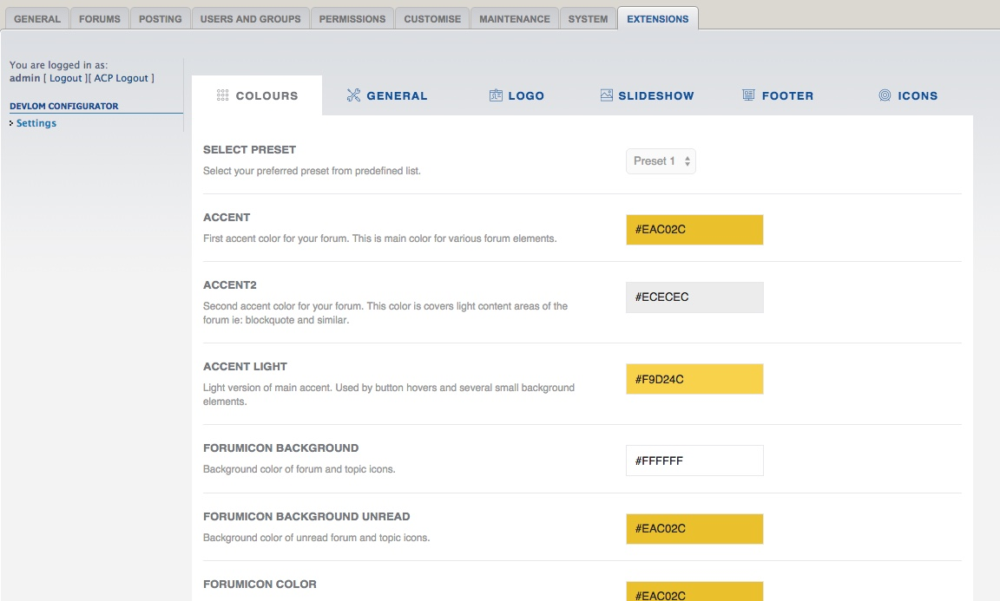

In Solace, adjusting style is split into two parts:

In next chapters, we will explain how to customize selected forum parts using methods above.
Devlom Configurator must be installed for both configuration methods to work.
Template inheritance is arguably the most useful thing about phpBB's template-engine for style authors. If you base a new style on an existing one, but you only want to change a few templates, you don't have to copy them all. This would create a lot of identical copies of files on your server, and things would get cluttered pretty soon. It would also become very tedious to merge all the changes to the templates, if the "parent" style were to receive an update.
This is by far the most common error on all premium phpBB 3.1 styles. Style authors are trying to recreate almost every single prosilver file, which breaks compatibility with extensions and makes style difficult to upgrade. In Solace we went one step forward. We created style that is based on prosilver. We modified only 3 template files (!!) instead of around 150 like other style developers do.
Result ? Solace is 99% compatible with prosilver codebase. It's ready to work with custom extensions and it's absolutely easy to upgrade when new version of phpBB 3.1 is out. Let's say, when you update phpBB 3.1 to newer version. You basically updated Solace to newer version as well. It's simple as that.